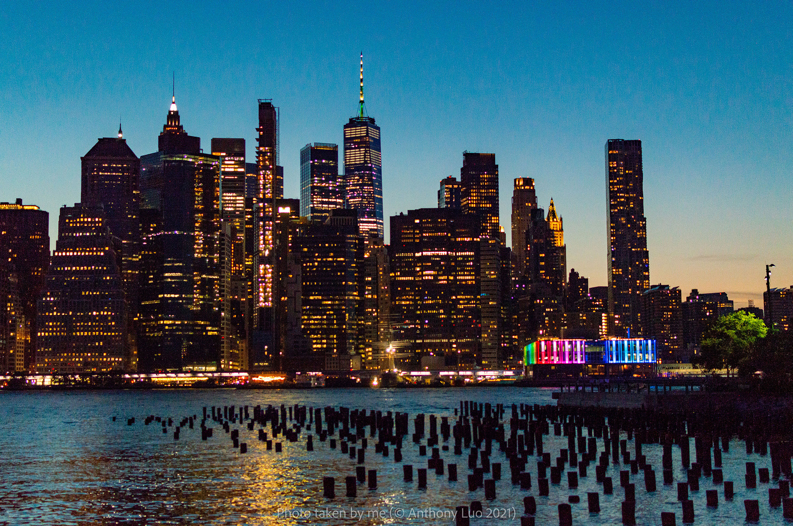
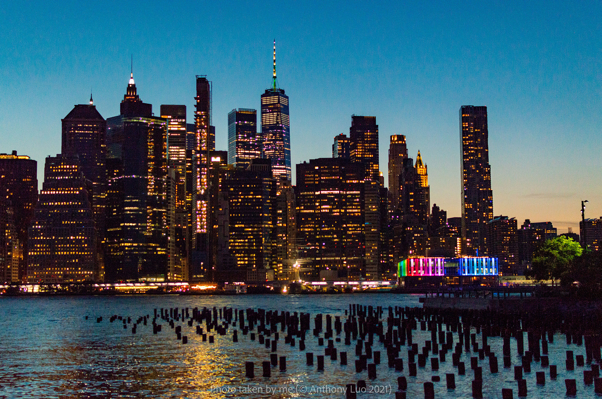

Columbia Space Initiative / Mission Co-Director
SUITS Team | October 2019 - PresentIn cooperation with Columbia CGUI Lab (Advisor: Professor Steven K. Feiner)
- Co-lead development (~10 students) of an augmented reality (AR) system (Hololens 2) for astronauts and deep space mission
- NASA SUITS Challenge 2020 & 2021 finalists: presented AR system to NASA
- Spearheaded technical papers, proposals, presentations, & grant applications; led CS workshop for Columbia SPLASH 2020
- Developed Voice Control System + Intelligent Anomaly Detection and Telemetry Monitoring System + Data Backend
SLICEIT|ICT (International Climate Team) / 2017 - 19 West Regional Leader
501(3)(c) non-profit orgnization | October 2016 - June 2019Supported in part by the Department of Geosciences at Boise State University
- Spearheaded ~$450 grant; Led workshops and engineering, regional meetings, funding, events etc. for 3 ICT school clubs
- Created and taught a pilot STEM curriculum to a high-school environmental science class
Hobbies & Activities
In my spare time, my primary passions are everything food, photography, and music.
Below
are
some of the highlights of my hobbies.
Combining my love of food and photography, I am the photographer for a food Instgram page (@forktastic_foods) that a friend and I run. Some of these pictures have been featured by restaraunts on their Instagram pages (including Michelin-starred restaraunt The Clocktower). Shown below are some highlights (all pictures below are shot by me on a Nikon D3200 with a 35mm f/1.8 lens). Please contact me for licensing purposes.
Bottom Row: The NoMad, Jeju Noodle Bar, iDessert by Jean-Philippe
Happy Birthday Variations
For a friend's birthday, I composed and performed theme and variations on Happy Birthday in the style of various classical composers (see if you can guess the composers!). Sheet music available on request.
Photography
The cityscape pictures of NYC on this website and shown below were all shot by me on a Nikon D3200 or a Sony a7iii. Please contact me for licensing purposes.
 
